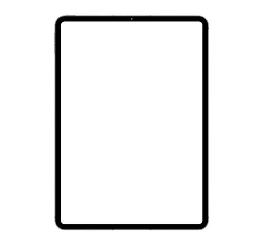

 Venter på læreren
Venter på læreren
Klimaendringene rammer fattige land hardest.
El-biler er helt utslippsfrie.
Alle FNs bærekraftsmål handler om klima og miljø.
Fornybar energi kan erstatte fossil energi og løse klimaproblemet.